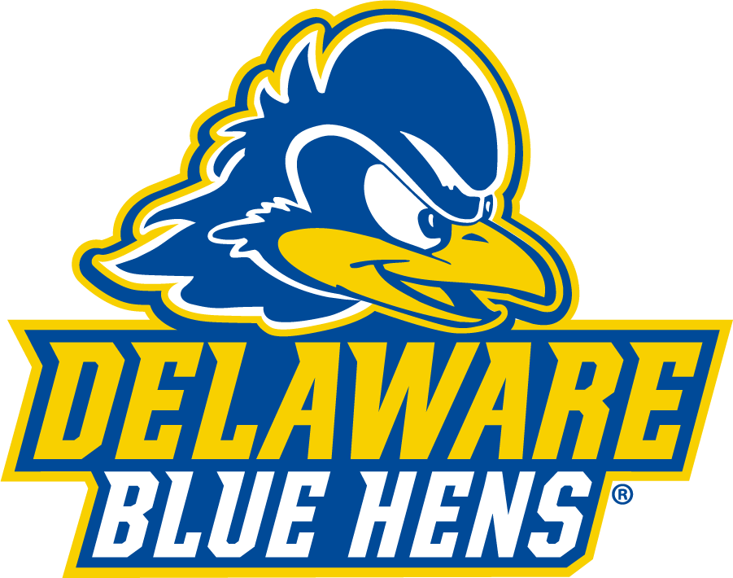

Welcome to the Next Chapter of Your Story
Thinking about college?
Let us show you why the University of Delaware could be the place where your passions grow, your voice gets louder, and your future takes flight.
Scroll down to explore life as a Blue Hen — academics, campus vibes, and everything in between.
Thinking about college?
Let us show you why the University of Delaware could be the place where your passions grow, your voice gets louder, and your future takes flight.
Scroll down to explore life as a Blue Hen — academics, campus vibes, and everything in between.
Undergrad
- Accounting
- Biological Sciences
- Business Analytics
- Chemical Engineering
- Communication
- Computer Science
- Criminal Justice
- Economics
- Elementary Teacher Education
- Environmental Science
- Finance
- Hospitality Business Management
- International Relations
- Marketing
- Mechanical Engineering
- Neuroscience
- Nursing
- Political Science
- Psychology
- Sport Management
Grad
- Accounting (MS)
- Applied Physiology (MS/PhD)
- Art Conservation (MS)
- Business Administration (MBA)
- Chemical Engineering (MS/PhD)
- Communication (MA)
- Computer Science (MS/PhD)
- Data Science (MS)
- Economics and Applied Econometrics (PhD)
- Education (MEd/EdD/PhD)
- Electrical & Computer Engineering (MS/PhD)
- English (MA/PhD)
- Environmental Engineering (MS/PhD)
- History (MA/PhD)
- Mechanical Engineering (MS/PhD)
- Neuroscience (PhD)
- Nursing Practice (DNP)
- Public Administration (MPA)
- Speech-Language Pathology (MS)
- Urban Affairs & Public Policy (PhD)
Welcome to the Next Chapter of Your Story
Thinking about college?
Let us show you why the University of Delaware could be the place where your passions grow, your voice gets louder, and your future takes flight.
Scroll down to explore life as a Blue Hen — academics, campus vibes, and everything in between.
Thinking about college?
Let us show you why the University of Delaware could be the place where your passions grow, your voice gets louder, and your future takes flight.
Scroll down to explore life as a Blue Hen — academics, campus vibes, and everything in between.